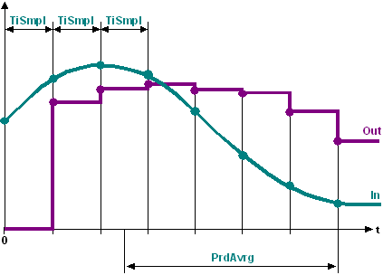

[AVE_TIME] Time-based average
The AVE_TIME function block calculates the average time within a given acquisition period from a series of input values.
AVE_TIME acquires a series of values within a configurable acquisition period and calculates the time-based average. The output value is updated after each sampling time.
The period for averaging [PrdAvrg] is the timeframe during which input values are acquired. The average is calculated as soon as more than one input value is acquired during the period.
Set sampling time
The sampling time [TiSmpl] is the time between two input values recorded back-to-back at the input [In].
Sampled values are stored to the function block memory. Up to 30 input values are saved in memory. If a sampling time and period for averaging are selected in a way that requires saving more than 30 sampling values in memory, AVE_TIME automatically optimizes the calculation to limit the number of saved values to 30.

Stop time averaging
Averaging stops if the value on input [EnFnct] is set to 0. No more input values are acquired. The last calculated average for the acquisition period is pending in this case at the output [Out]. The derived input values remain in memory. Averaging is continued if the value on input [EnFnct] is set to 1.
Delete saved values
If the value at input [Reset] is set to 1, all acquired input values are deleted from memory. The value at output [Out] is overwritten by the present input value [In].
Input | Description | Data type | Default value |
|---|---|---|---|
EnFnct | Enable function Enables the function. | Boolean | 1 |
0 - The function is disabled. | |||
In | Input | Real | 0.0 |
Reset | Reset | Boolean | 0 |
0 - Do not reset | |||
PrdAvrg | Period for averaging All sampled values are averaged within this period. | Time | 0 ms |
TiSmpl | Sampling time Time between the acquired input values. | Time | 0 ms |
Output | Description | Data type | Default value |
|---|---|---|---|
Out | Output | Real | 0.0 |
ValMax | Maximum value Highest value in memory. | Real | 0.0 |
ValMin | Minimum value Lowest value in memory. | Real | 0.0 |
The value at output is [Out] = 0 after automation station startup. The output value is equal to the average of the acquired input values after the first sampling cycle.
Calculates the time-based average for the outside temperature within an acquisition period.